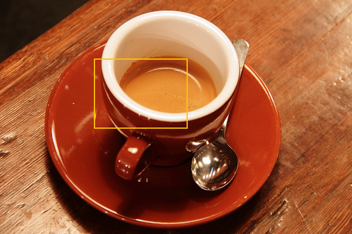

공개 타입
zvision.ColorStatistics: 패키지 __all__ 공개 이름입니다. 선언 출처: zvision._color.ColorStatistics.
ColorStatistics(count: int, min: tuple, max: tuple, mean: tuple, std_dev: tuple)
ColorStatistics(count: int, min: tuple, max: tuple, mean: tuple, std_dev: tuple) -> None인자 선언
count· POSITIONAL_OR_KEYWORD · 타입<class 'int'>· 기본값 없음min· POSITIONAL_OR_KEYWORD · 타입tuple[float, ...]· 기본값 없음max· POSITIONAL_OR_KEYWORD · 타입tuple[float, ...]· 기본값 없음mean· POSITIONAL_OR_KEYWORD · 타입tuple[float, ...]· 기본값 없음std_dev· POSITIONAL_OR_KEYWORD · 타입tuple[float, ...]· 기본값 없음
반환 타입 주석: None
시그니처와 설명에 없는 반환값, 오류, 제약 조건은 확인되지 않았습니다. 환경별 네이티브 지원 여부와 예제 실행은 별도 검증이 필요합니다.
공개 멤버
데이터 필드
| 필드 | 타입 | 기본값 | 의미와 조건 |
|---|---|---|---|
count | int | 필수 | 통계에 포함된 픽셀 수입니다. |
min | tuple[float, ...] | 필수 | 선택 픽셀의 정규화 인코딩 RGB 채널별 최소값입니다. |
max | tuple[float, ...] | 필수 | 선택 픽셀의 정규화 인코딩 RGB 채널별 최대값입니다. |
mean | tuple[float, ...] | 필수 | 선택 픽셀의 정규화 인코딩 RGB 채널별 평균입니다. |
std_dev | tuple[float, ...] | 필수 | 선택 픽셀의 정규화 인코딩 RGB 채널별 모집단 표준편차입니다. |
사용과 결과 해석
선택된 색 영상 픽셀의 채널별 통계 스냅샷입니다. count는 포함된 픽셀 수이고 min, max, mean, std_dev는 RGB 순서의 세 값입니다. 각 채널은 정규화된 인코딩 RGB 단위로 해석하며 std_dev는 모집단 표준편차입니다. 이는 Lab 색차나 픽셀 위치가 아니라 선택 집합의 밝기·색 분포를 요약하는 값입니다.
색 통계 호출의 선택 마스크는 영상과 같은 크기와 원점의 Gray8입니다. 비제로 픽셀을 포함하고 마스크가 없으면 전체를 사용합니다. 예를 들어 두 픽셀이 선택되면 count는 2이며 각 채널의 평균은 해당 두 값의 평균입니다. 영상의 실제 채널 값을 알지 못할 때 평균이나 표준편차를 추정하지 말고 반환값을 읽어야 합니다.
마스크가 어디를 선택했는지 기록하지 않으면 두 실행의 평균이 달라진 이유를 색 자체와 선택 영역 중 어디에서 찾을지 구분하기 어렵습니다. 결과는 값 스냅샷이지만 입력 영상과 마스크는 별도 소유 객체입니다. 입력 형식이나 마스크 기하가 잘못된 호출은 count가 0인 정상 통계와 구분해야 합니다.
표준편차가 작더라도 기준 목표와 가까운 색이라는 의미는 아닙니다. 목표색과의 거리가 필요하면 색 좌표와 거리 계산을 별도로 선택합니다.
실제 사진으로 확인하기
